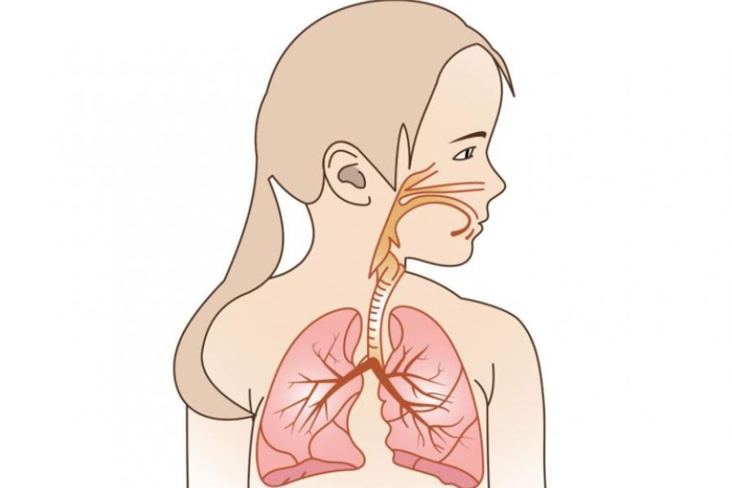
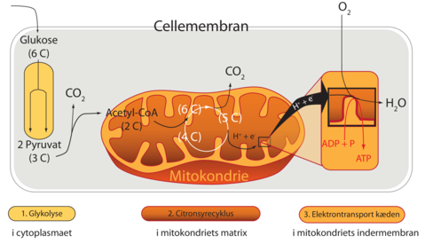

Hvad er respiration?
Respiration er den del af alle organismers stofskifte, som laver i udvekslingen af luftarter mellem organismen og den omgivende luft eller vand, eller lettere forklaret som åndedrættet hos en persen, et dyr, en fisk, og endda en plante når lys ikke er til stede.
Billedet kommer fra kidshealth.org
Når vi trækker vejret, får vi oxygen/ilt ind i kroppen, som hjælper os med at nedbryde glukosen i vores mad, så vi kan få energi ud af det. Respirationen er essentiel for at holde livet på jorden kørende, ilten giver hjælper os med at danne energi og bruges til B.L.A. At afbrænde kulhydrater, fedtstoffer og proteiner, det er også en af de processer der danner kuldioxid, vand og kvælstof.
Den simple formel for respiration er:
C6H12O6 + 6 O2 + energi → 6 CO2 + 6 H2O
(Glukose + oxygen + energi → carbondioxid + vand)
Alle vores celler i kroppen har også brug for ilt til at fungere. F.eks. for at nedbryde den mad du spiser, og udvinde dens energi, så skal du bruge den oxygen du får gennem vejrtrækningen. Respirationen består af 3 hovedsagelige aktiviteter som din krop sørger for at holde kørende.
Udvendig respiration
Indvendig respiration
Cellulær respiration
Udvendig respiration er selve vejrtrækningen, altså at trække oxygen/ilt ind i lungerne og puste carbondioxid ud igen.
Indvendig respiration er lungerne der fører ilten videre gennem blodet og ud til cellerne som skal bruge ilten til diverse ting, og udåndingen af carbondioxid som blodet tager med tilbage til lungerne fra diverse celler efter at have udnyttet ilten.
Cellulær respiration er processen som dine celler udfører, f.eks. nedbrydningen af din føde.
Når glukosen fra føden skal nedbrydes, bliver det til kuldioxid(CO2), protoner(H+) og elektroner(e-), hvorefter protonerne og elektronerne overføres til ilten(O2), så det samles til vand(H2O). Glukosens kulstof bliver så oxideret, hvilket vil sige at det afgiver en elektron imens mens oxygenet fra ilten modtager en elektron, og dermed reduceres. Den energi der bliver frigjort, bruges til at binde fosfor (Pi) på ADP og lave ATP.
Respirationen kan deles op i 3 yderligere og mere avancerede kategorier, nemlig:
Billedet kommer fra systime
Disse processer kræver nogle vigtige enzymer, Co enzymer og aktivatorer. Du kan læse mere om de forskellige delprocesser i de næste emner.